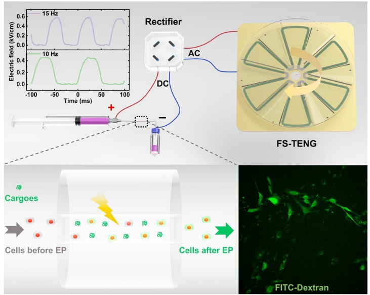
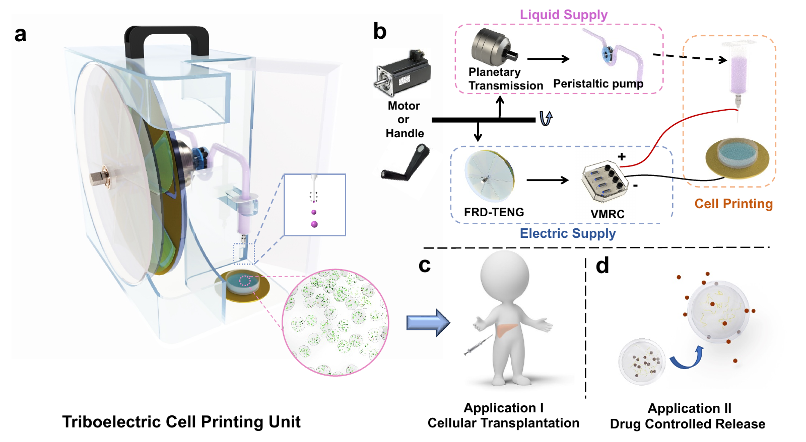

02 · Engineering tools for measurement & control
How can we quantitatively probe and manipulate living systems?
My micromechanics platform combines controlled deformation, sensitive force measurement, and microscopy to quantify tissue responses. Earlier work used triboelectric nanogenerators to power intracellular delivery and cell printing.

A549 spheroid compression
Controlled compression and release, recorded by side-view microscopy.
Open video of A549 spheroid compression ↗View methodology
Earlier engineering work: cellular delivery & biofabrication
During my master’s and doctoral research, I used triboelectric nanogenerators to convert mechanical motion into electrical stimulation. This enabled bulk electroporation for intracellular cargo delivery and electro-assisted printing of cell-laden hydrogel microspheres. These projects established my approach to developing physical tools for biological manipulation.

Intracellular delivery
Mechanical stimulation powers electroporation to introduce molecular cargo into cells.
ACS Nano, 2022 ↗
Cell printing
Mechanical motion drives electro-assisted production of cell-laden hydrogel microspheres, with potential applications in transplantation and drug delivery.
Nano Energy, 2020 ↗